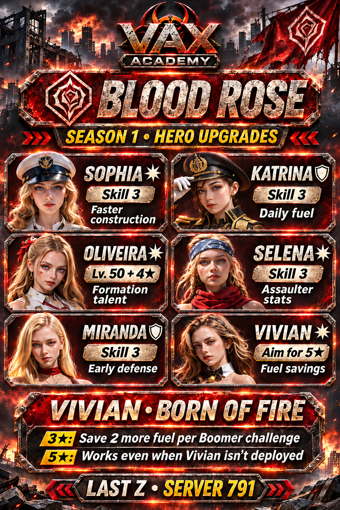
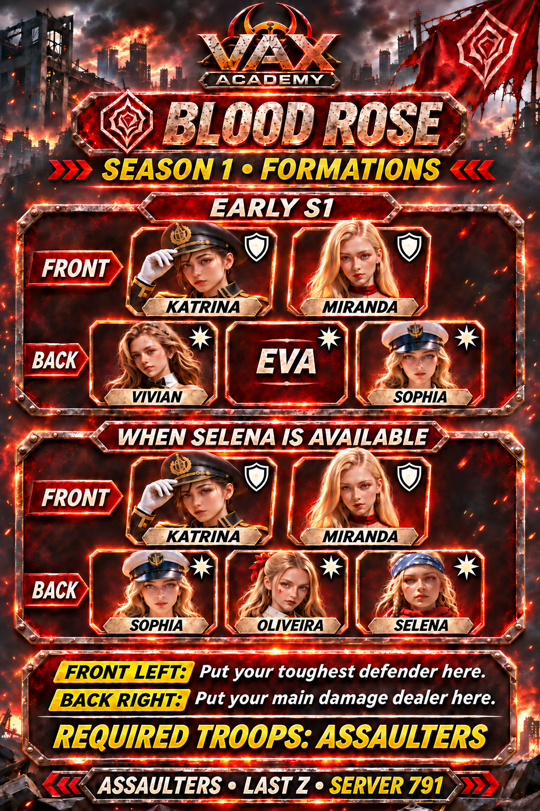

LAST Z · SEASON 1
Blood Rose
Hero upgrades and formations for Assaulter troops. Tap a poster to open the full-size image.
English · EN
Hero Upgrades Full size ↗
Formations Full size ↗Hero upgrades and formations for Assaulter troops. Tap a poster to open the full-size image.
English · EN
Hero Upgrades Full size ↗
Formations Full size ↗